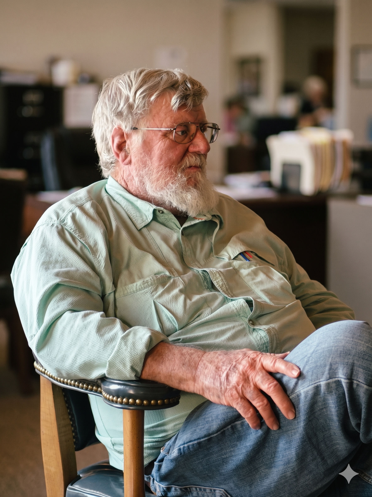

Stephen W. Smith
Agricultural Engineer

Stephen Smith holds three engineering degrees and has been involved in numerous irrigation and water resources projects throughout his continuing professional career.
Engineering projects allowed for extensive travels, both foreign and domestic, over the past 40 years and photography has always been a supporting aspect of his work and enjoyable documentation of people and places. Photography is also a key complementing aspect of his hiking, hunting, fly fishing, camping, and other outdoor activities. He has often put down the fly rod for a photographic opportunity in the wilds of Colorado, Wyoming, Montana, or New Mexico.
25 years of